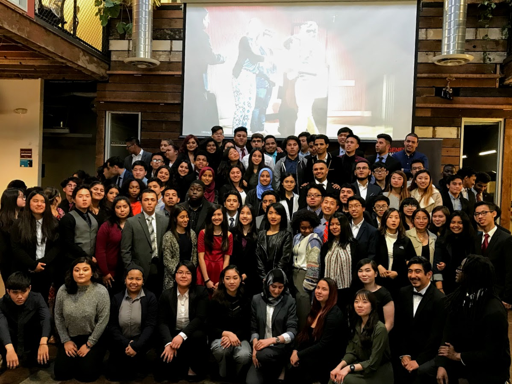
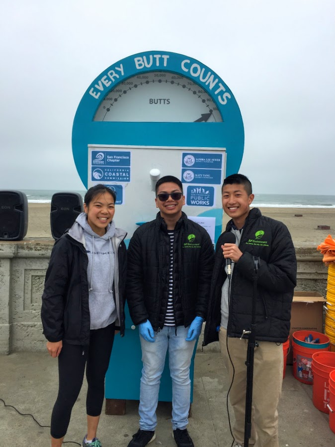

Clayton Yan
Welcome to my experiences beyond my resume!
Work, work, work, work, work
Professional Experience in the Field
Budget Financial Planning Analysis
San Francisco Municipal Transportation Agency
July 2019 - August 2019
Summer Internship involved in Agency's finances/operations
- Allocated agency’s new hiring resources to six divisions leading to greater efficiency in the hiring process
- Managed facility project timelines for SFMTA’s new hybrid bus yard and affordable housing complex
- Synthesized agency’s asset (revenue fleet) data for annual State of Good Repair Report
Teaching Assistant
California Innovation
July 2019 - August 2019
Opportunity to work with graduate students in Strategic Design and implementation
- Fostered design thinking in an innovation hub with over 20 international student participants
- Facilitated five entrepreneurial research projects addressing artisanal changes with industry start-up leaders in the coffee, wine, bread, chocolate, and slow fashion industries
- Emceed final presentation and pitch to company representatives.
Financial Information Technology Intern
San Francisco Municipal Transportation Agency
August 2017 - August 2018
Year-long Internship involved in Agency's technology/strategy
- Worked alongside the Strategic Manager to effectively organize data & administrative planning in the Project Delivery and Management, Asset Management, and Construction Mitigation divisions
- Built and delivered the agency's $60 million capital resource plan encompassing over 600 new positions
- Formulated cost-estimate templates leading to increased accuracy of every Capital Improvement Project
Young Professional
Genesys Works Bay Area
June 2017 - July 2018
Developed professional and technical skills leading to internship, designed to help high school students prepare for the workforce
- Five weeklong summer training program focused on professionalism
- Collaborated with a small team to build a renovation plan with budgeting, presentation skills, and delegation
- Onboard future interns with training and planning, includes alumni network to assist students in career choices
Community Relations Intern
SF Environment
June 2017 - August 2017
Spread SF Environment's sustainability goals culminating with launch of Cigarette Butt Campaign
- Assisted in the successful launch of San Francisco's Cigarette Butt Campaign that has added 40 receptacles resulting in a 58% reduction in butt litter.
- Educated the public, spread awareness, installed receptacles, and surveyed butt litter along commercial corridors.
- Community Outreach: Intersolar Convention, Sunday Streets, District Community Clean Ups, and volunteering at local gardens.